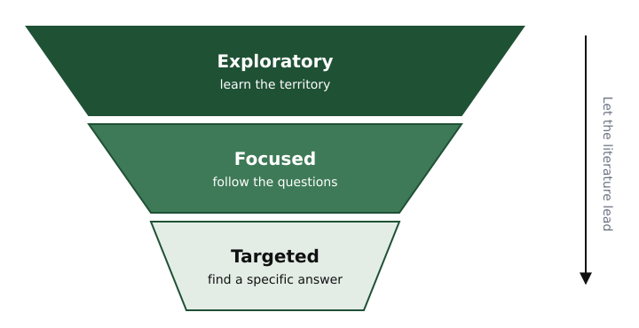
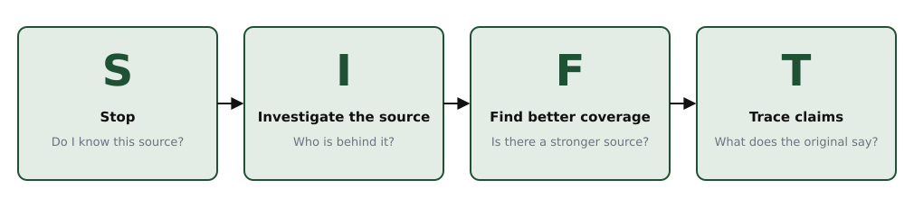

Chapter 8: Research
In this chapter
- Objectives
- Key terms
- The idea
- 8.1 Research with a goal
- 8.2 Let the literature lead
- 8.3 Three levels of research
- 8.4 Search habits
- 8.5 Getting the full text
- 8.6 Judging source quality
- 8.7 Using AI responsibly
- Say it
- Worked examples
- A personal decision
- A national policy question
- How a judge weighs it
- Common mistakes
- Practice
- Check questions
Move: Prove. Builds on: Chapters 2 and 6. Where you use it: the first hours you spend on any new resolution, and every time you prepare for a debate after that.
Objectives
By the end of this chapter you should be able to:
- Explain how research for a debate differs from academic research, and why looking for the source that says you are right is a trap.
- Use three levels of research to move from a new topic to specific evidence.
- Search efficiently with keywords, operators and the right tool for the question.
- Get the full text of a source legally through your library and open-access tools.
- Judge a source's quality using source types, lateral reading and the four SIFT moves.
- Use AI tools in research without letting them supply your evidence.
Key terms
Research, goal-oriented research, confirmation bias, literature-informed, exploratory research, focused research, targeted research, search operator, library database, open access, peer review, think tank, lateral reading, SIFT, hallucination.
The idea
8.1 Research with a goal
In debate, research is the process of finding relevant information about the resolution in order to build arguments for your side and answers to your opponent's. That definition hides something important. Debate research is goal-oriented research: you know the conclusion you need before you start looking. You were assigned a side. Your job is to prove it.
That is not how academic research usually works. A scientist or historian starts with a question and follows the evidence wherever it goes; the conclusion comes last. A debater starts with the conclusion and goes looking for support. Lawyers work this way too, and so does anyone writing an advocacy brief, so there is nothing dishonest about it. But it creates a specific temptation.
Call it the search for IAmRight.com: the imaginary website that says, in one perfect sentence, exactly what you need it to say. Every debater has typed a search hoping to land there. The trouble is that the sources that come closest to IAmRight.com are often the weakest ones you could find. Careful researchers qualify their claims, describe their limits and report results that cut both ways. The sources that state your conclusion in the boldest possible terms, with no caveats, are usually opinion pieces, advocacy groups, blogs and social media posts. A search engine will happily find them, because you asked for them.
The deeper problem is confirmation bias, the tendency to notice, favor and remember information that supports what you already believe. Goal-oriented research feeds it. When you are hunting for support, a sentence that agrees with you feels like a find, and the paragraph after it, the one where the author explains why the claim is more complicated, is easy to skip. That is how debaters end up reading evidence out of context, which Chapter 6 showed can hand your opponent a weapon and Chapter 9 treats as an ethics problem.
None of this means you should stop doing goal-oriented research. Debate is advocacy, and advocacy needs evidence. It means you need habits that keep the goal from bending what you find. The rest of this chapter is those habits.
8.2 Let the literature lead
The most important habit is to be literature-informed: let your reading shape your arguments, instead of deciding your arguments first and then hunting for evidence to fit them. The "literature" is simply the body of serious writing on a topic: studies, reports, books and expert analysis.
In practice, being literature-informed means that the first thing you do with a new resolution is read, not search for quotes. Spend your first stretch of preparation, even if it is only a few minutes before a debate with limited prep time, reading about the topic to learn what the experts actually argue about, which impacts the topic can reach and where the strongest evidence is. Then choose arguments that the literature supports. Your goal (your side) does not change. What changes is that you pick the route to it after looking at the map, instead of drawing the route first and hoping a road is there.
This habit also solves the IAmRight.com problem. If the literature does not support an argument, a literature-informed debater drops the argument. A debater who started with the argument keeps searching until some source, any source, says it.
One more piece of the habit: research both sides. You will often debate both sides of the same resolution, and even when you do not, the best way to prepare answers is to know your opponent's strongest evidence before they read it. Reading the other side also makes your own arguments better, because the sources that take the controversy seriously are usually the most credible ones on either side.
8.3 Three levels of research
Research on a new resolution moves through three levels, from wide to narrow. Each level asks a different kind of question. (Librarians use the words primary, secondary and tertiary to describe kinds of sources, such as original data, analysis of that data, and encyclopedias. This book uses different names for the levels of research to avoid mixing the two up.)

Exploratory research is research without a specific goal: you are learning the territory. On the AI fact resolution, an exploratory question is "How is artificial intelligence changing work?" Good sources at this level are overviews: news explainers, the executive summaries of major reports, and reference sites like encyclopedias. Reference sites are fine to read here, and their footnotes are a good map to better sources, but they are not sources you cite in a debate. By the end of exploratory research you should know the topic's vocabulary, its major studies and experts, and where the real disagreement is.
Focused research has a general goal: you are following up on the questions exploration raised. "Which occupations are most exposed to AI?" "What does the World Economic Forum's jobs report actually measure?" "Who disagrees with it, and why?" At this level you start reading studies and reports in full, and you start to see which arguments the literature can support on each side.
Targeted research has a highly specific goal: you are looking for a particular answer that you have reason to believe the literature will confirm. "How many jobs did employers attribute to AI in their 2025 layoff announcements?" This is the level where evidence for your case actually gets found, and it is also where the pull toward IAmRight.com is strongest. The rule at this level: if the literature does not confirm the answer you expected, change the argument, not the evidence.
The levels are not a one-way trip. Targeted research often turns up something surprising that sends you back to focused research, and that is the literature leading, which is exactly what you want.
At a glance
| Level | Goal | Example question (AI resolution) | Typical sources |
|---|---|---|---|
| Exploratory | None yet: learn the territory | How is AI changing work? | Explainers, report summaries, reference sites (to read, not cite) |
| Focused | General: follow the questions exploration raised | Which occupations are most exposed to AI? | Full reports, studies, expert analysis |
| Targeted | Specific: find an answer you expect the literature to confirm | How many jobs did employers attribute to AI in 2025? | The specific study, dataset or report that answers it |
8.4 Search habits
Most students search the way they talk, typing a full question into a search engine. Good researchers search the way authors write. A few habits make a large difference.
Use as few words as possible, and use the words an expert would use. "Will AI take people's jobs?" finds opinion and worry. "AI job displacement estimate" finds the reports those opinions are about. When a good source uses a technical term, such as "occupational exposure" or "labor displacement," add it to your searches.
Learn a few search operators, symbols and commands that tell a search engine exactly what you want. These work in Google and many other search tools:
- Quotation marks search for an exact phrase: "job displacement".
- A minus sign excludes a word: AI jobs -crypto.
- site: limits results to one website or type of website: site:bls.gov for the Bureau of Labor Statistics, or site:.gov for U.S. government sites.
- filetype:pdf limits results to PDFs, which is where many full reports live.
- OR (in capitals) finds either term: "artificial intelligence" OR "machine learning" employment.
Use the right tool for the question. A general search engine is good for exploratory research and for finding reports from organizations. A news search (such as Google News) is best for current events. Google Scholar searches academic writing; its "Cited by" link shows newer work that responds to a study, which is one of the fastest ways to find both support and criticism. Your college library's library databases, collections of journals, magazines and newspapers your college pays for, give you sources a search engine cannot. For U.S. policy topics, government sources such as the Bureau of Labor Statistics, the Census Bureau, the Congressional Budget Office and the Congressional Research Service publish data and nonpartisan analysis for free.
Keep a research log as you go: for every source you might use, record the author, the author's qualifications, the title, the publication, the date and the link. Recording it later means finding it again later, usually the night before a debate.
8.5 Getting the full text
Many of the best sources sit behind paywalls. You will often find a perfect-looking abstract and then a request for payment. Do not pay, and do not settle for the abstract: you cannot responsibly use a source you have not read. There are legal, free ways to get most of what you need.
Start with your college library. As a student, you already have access to its databases, usually through your student login from anywhere. You can also link Google Scholar to your library: in Scholar's settings, the Library Links option lets you add your college, and results your library can provide will show a full-text link. Reference librarians are the most underused research tool on any campus. They are experts at finding sources, and helping students is their job.
Next, look for an open access copy, a version of the article that is legally free to read. Many authors post copies of their work in university repositories. In Google Scholar, the "All versions" link under a result often finds one. Unpaywall, a free browser extension from a nonprofit, checks an index of legal open-access copies whenever you land on a paywalled article and links you to a free version if one exists.
If those fail, ask your library about interlibrary loan, which borrows articles and books from other libraries, or email the author. Researchers usually want people to read their work and are often happy to send a copy. For newspapers and magazines, your college or public library may offer free access as well.
Everything in this section is legal and free for students. Stick to these routes. Evidence you cannot show was obtained honestly is not evidence you want to defend in front of a judge.
8.6 Judging source quality
Once you have a source, you need to decide how much a judge should trust it. Start with the type of source, then check the specific source in front of you.
Some types of sources are generally strong. Peer review is the process in which other experts check a study before a journal publishes it, so peer-reviewed academic journals are among the most credible sources you can use. Government reports from agencies like the Bureau of Labor Statistics or the Congressional Budget Office are usually strong, especially for data. A think tank is an organization that researches and advocates on public policy. Reputable think tanks and research groups publish serious analysis, but most have a known perspective, and some are funded by groups with a stake in the issue. Use their work, and know where they stand.
Major news outlets and professional publications are generally good, especially for recent events. They are best used for what happened and what experts said, and less for causal claims, which a reporter is usually summarizing from someone else. When a news story reports a study, find the study.
Some types of sources do not belong in a debate case. Blogs and social media posts are usually one person's opinion with no checking. Reference sites, such as online encyclopedias and pro-and-con summary sites, are useful for exploratory research but are summaries of other sources; cite the sources they summarize instead.
Source types are a starting point, not a verdict. A peer-reviewed study can be weak, and a blog post by a leading economist can be excellent. The question is always about the specific source. Here, the habits of professional fact checkers help. In a well-known Stanford study, Sam Wineburg and Sarah McGrew watched historians, professional fact checkers and Stanford undergraduates evaluate websites on social and political issues. The historians and students mostly read vertically, staying on a site to judge it by how it looked and what it said about itself. The fact checkers practiced lateral reading: they quickly left the site and opened new tabs to see what other sources said about it. The fact checkers were faster and more accurate.
Mike Caulfield, a researcher at the University of Washington, condensed fact checkers' habits into four moves called SIFT. They fit debate research well.

Stop. When you find a source that seems perfect, especially one that gives you a strong emotional reaction or exactly the sentence you wanted, pause before you use it. Ask whether you know who wrote it and whether you trust them. IAmRight.com should set off this alarm.
Investigate the source. Spend a minute finding out who is behind it, using lateral reading. Who is the author, and what are their qualifications? Who publishes the site, and do they have a stake in the issue? In debate, this step also gives you something you will need anyway: the author's qualifications, which you will read aloud with the evidence (Chapter 9).
Find better coverage. If a source is weak or you cannot tell, look for a better source making the same claim. If a blog says AI will destroy 40 percent of jobs, look for the report the number came from, or for experts who have assessed that claim. Often the better source is easy to find once you know the claim.
Trace claims to the original context. Much of what you find online is a summary of a summary. Follow the claim back to its original source and read what that source actually says, including the paragraphs around the sentence you want. Chapter 6's Goldman Sachs example is what happens when a debater skips this move.
After SIFT, ask the questions that matter for a debate in particular. Is the author qualified on this specific question? Is the source recent enough for the topic? On a fast-moving topic like AI, a three-year-old prediction may already be out of date. Does it speak directly to the resolution, or to something nearby? And for studies, how was it done: how large was the sample, and who was in it?
At a glance
| Question | What to check |
|---|---|
| Who wrote it? | The author's qualifications on this specific question |
| Who published it? | The publisher's reputation, perspective and funding |
| What kind of source is it? | Peer-reviewed study, government report, think tank, news, or opinion |
| Is it recent enough? | The date, measured against how fast the topic changes |
| Is it on point? | Whether it addresses the resolution or only something nearby |
| What does the original say? | The full context of the claim, traced back to its source |
8.7 Using AI responsibly
AI tools can make you a faster researcher, and they can also end your credibility in one debate. The difference is whether you treat them as a research assistant or as a source.
Used as an assistant, AI is genuinely helpful. It can summarize a topic during exploratory research, brainstorm arguments for both sides, suggest counterarguments you had not considered, propose search terms an expert would use, check whether your explanation of an argument is clear, and help you adapt an argument for a particular audience. In each of those uses, you check the result against real sources before it goes anywhere near a debate.
Used as a source, AI is dangerous. AI chatbots can produce a hallucination: a confident, fluent, specific answer that is simply false, including statistics, quotations and citations to studies that do not exist. In Mata v. Avianca (2023), lawyers in New York filed a brief citing court decisions that ChatGPT had invented. When the court could not find the cases, the lawyers stood by them at first. Judge P. Kevin Castel fined the lawyers and their firm \$5,000 and required them to send his opinion to the real judges the fake decisions had been attributed to. Professionals with law degrees made this mistake. A student in a debate round can make it too.
The rule is simple: never use a quotation, statistic or citation you have not read in its original source. If an AI tool points you to a source, go read the source. Some tools now link the sources they summarize, which is useful, but summaries can still misstate what a source says, so the rule still applies. And follow your course's policy on AI use, including any requirement to disclose it.
A coach's view, from this book's author: you are responsible for every word you put in an outline, every piece of evidence you read in a debate and every word you say in a round. AI makes mistakes. Catching them is your job, not the tool's.
Say it
- Read qualifications with evidence: "Professor of economics at MIT, in a 2024 study..."
- Compare sources: "Prefer our evidence: it's a peer-reviewed study, and theirs is a blog post."
- Trace a claim: "Their card is a news summary. The original study says something narrower."
- Question a source in cross-examination: "Who is your author, and what are their qualifications?"
- Point out a stake: "Their source is funded by the industry the resolution would regulate."
Worked examples
A personal decision
Resolution: Starting at a community college costs less than starting at a four-year university.
Exploratory: what does "cost" include? Reading overviews turns up the difference between published price (tuition and fees) and net price (what students pay after grants), and the fact that living costs, books and time to degree all count. Focused: how do net prices compare, and what happens to transfer students? Targeted: what is the published tuition at each type of school? The College Board's annual Trends in College Pricing answers that directly, and the federal College Navigator site shows the net price for specific schools.
The IAmRight.com moment comes early. A community college's own web page promises students will "save thousands." It says exactly what the affirmative wants. SIFT stops the debater: the source has an obvious stake in the claim. Finding better coverage leads to the College Board data, which supports the same conclusion and is far harder to attack.
A national policy question
Resolution: The United States federal government should substantially restrict the development of artificial intelligence.
Exploratory research starts with what the law currently says, and the Congressional Research Service is a strong place to start, because it writes nonpartisan explanations of current policy for members of Congress. Focused research looks for the main arguments on both sides: think tanks across the political spectrum, academic research on AI risks and benefits, and statements from AI companies, which are informative but come from parties with an obvious stake. Targeted research then finds specific evidence for the arguments the literature supports.
Partway through, the debater finds a headline (this part of the example is hypothetical) claiming that experts say AI will probably end humanity. It is a perfect IAmRight.com sentence for the affirmative. Tracing the claim to its original context turns up a survey whose actual question and results are far more qualified than the headline. The literature-informed move is to read the survey, report what it actually found, and build the argument on that, even if it sounds less dramatic. A judge who hears the opponent read the full survey will trust the qualified version more.
How a judge weighs it
Most judges do not evaluate source quality on their own initiative. They compare evidence when the debaters give them a reason to. That means source quality is an argument you have to make out loud, using the questions in section 8.6. Judges also notice credibility: a debater who cannot answer "who is your author?" loses some of the judge's trust in every piece of evidence they read afterward. Evidence that turns out to be fabricated or badly out of context can lose a debate on its own. Chapter 9 covers evidence ethics in detail.
Common mistakes
- Searching for IAmRight.com. The source that says exactly what you want, boldly, is often the weakest one available.
- Skipping exploratory research. Debaters who start with targeted searches find quotes without understanding the topic.
- Citing a summary of a summary. Trace the claim to the original and read what it actually says.
- Using only the abstract. If you cannot get the full text through the library or an open-access copy, do not use the source.
- Treating an AI answer as evidence. Never use a statistic, quotation or citation you have not read in its original source.
- Losing the citation. Record the author, qualifications, date and link when you find a source, not later.
Practice
Drill: research race (20 minutes, small groups). Your instructor gives each group a list of specific questions, such as the title of a particular study, a statistic from a government report, or the qualifications of a named expert. Groups race to find each answer and must show the original source, not a summary. Afterward, each group explains which searches and tools worked and which wasted time.
Drill: sixty-second SIFT (10 minutes, pairs). Each partner finds an article or website making a claim about AI and jobs. Swap. You have sixty seconds to investigate the other's source using lateral reading, then report who is behind it and whether you would use it in a debate.
Writing exercise. Keep a research log for the AI fact resolution: five sources, at least two of them peer-reviewed or government sources, each with full citation information, the author's qualifications, and a two-sentence note on what the source shows and how you got the full text.
Check questions
Choose an answer to see feedback. Nothing is recorded.
1. Why is searching for "IAmRight.com" a trap in debate research?
2. A debater asks, "What does the World Economic Forum's jobs report actually measure?" Which level of research is this?
3. You find the perfect abstract, but the article is behind a paywall. What should you do first?
4. What did professional fact checkers do differently from historians and students in the Stanford lateral-reading study?
5. Which use of an AI chatbot is responsible in debate research?